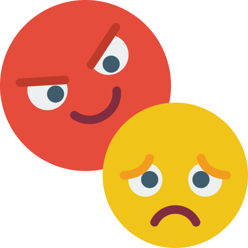

Introduccion sobre el bullying
09/11/21
Contexto
El bullying es el acoso escolar por lo que un alumno o varios alumnos pretenden intimidar, someter, amedrentar o atemorizar emocionalmente o fisicamente a la victima
osea a otro alumno ya sea dentro de una institucion educativa o fuera de ella, essto muchas veces lo hacen par
hacer senit mal a la victima haciendole saber sus defectos pero de una mala manera ya que se los dicen pero burlandose y eso hace sentir mal a la victima, y la victima muchas veces no se siente con la confianza de contarselo a los profesores o a sus papas ya que en ocasiones
los agresores los amenazan.
Desarrollo
En este blog se hablara sobre como podemos tratar el bullying, como evitarlo y sobre todo como saber manejarlo y hacerles saber que siempre hay una solucion para los problemas y que desde que comienza cualquier tipo de agresion hacerselo saber a los padres o a los profesores
sin miedo a que diran las demas personas, ademas de que tambien debe de haber personal docente para que este al pandiente de las situaciones ya que la prevencion es la mejor alarma para combatir el bullying
y sobre todo tambien se hablara de como no ser parte de esas agresiones ya que aunque no colabores pero si vez lo que esta pasando y no dices nada seria un complice y estrias formando parte de esas malas acciones, y tambien se hablara
de como respetar a los demas sin distinccion alguna.
Motivacion
Escogi este tema por que hoy en dia este es un tema que muchas veces no sabemos como tratar ya que aveces tenemos miedo a reaccionar y en muchas ocasiones no sabemos que hacer, ya que las victimas no se sienten con la suficiente confianza para hablar estos temas con sus papas
y por el otro lado no hay motivo de molestar a un apersona ya que todos somos igueles y no debemos discrimar a una persona por su estado fisico si esta gordo o si esta flaco, si esta alto o chaparro, y mucho menos si es blanco o moreno, todos somos iguales y merecemos el
mismo respeto, ya que madie tiene derecho a juzgar a alguien mas. A principios de los ochenta por parte de Olweus hizo el primer programa abti bullying y a partir de ahi se hicieron muchos programas aunque no todos se llevaron a cabo.